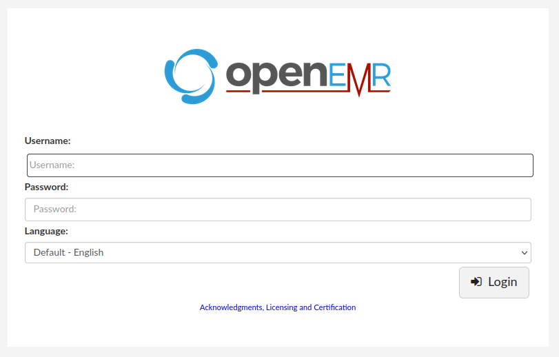
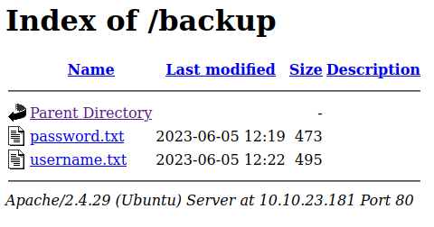

Morpheus Walkthrough
by ssi51
This is for MCC2023 Registration Challenge. I will just go straight to the tasks.
User Flag
There are 2 ways to get foothold. The flag is in user home directory. Flag format: MCC2023{xxxxx}
As usual, let's start with an Nmap scan. sudo nmap -sS -sV [Machine IP]
From the result, we could see that there is a server running. Let's check it out!
There's nothing much we can do with a default page. But I want to check whether they have 'hidden directories' or no. You can do this by using Gobuster.
gobuster dir -u http://[MACHINE IP] -w [wordlist location]
As you can see, we have 2 hidden directories. Let's check them out~

This is for the /management directory. It is a login page for OpenEMR

Meanwhile this is for the /backup directory. As you can see here, they provide us with the usernames and passwords wordlist. From here, I get the idea to do some bruteforce attacks onto the login page. We can do so by using Burpsuite Cluster Bomb Attack
*I'm using Intruder attack in the POC above because it took too long to do Cluster Bomb Attack. This works the same for Intruder attack, the only difference is that the Cluster Bomb allows you to put 2 wordlists while Intruder only 1.
From the POC above, I got the correct username and password for the Login page. The username is morpheus while the password is gooniegoogoo.
As soon as I reached the dashboard, I will look around to see if I could upload
I will look for a place for me to upload some files. The document template management lets me to do this. Before I start with the actual reverse shell, let's test it out first with mountains.jpg file.
After we upload them, we gotta look for the directory path to our jpg file. To do this, I use Gobuster again.
After going through one by one, I found the directory path is in /sites.
*This took me a while to do the same thing all over again to find the complete directory path. Finally, I could find it in /management/sites/default/documents/doctemplates
Now, let's use the actual reverse shell file. I use the PHP cmd 2 from www.revshells.com
Copy the code and paste it into a new .php file. Then, you may upload the file at the same place we tested.
Do the same as earlier. Find the uploaded file in the directory path.
Click on the file and add ?cmd=pwd on the search engine
What I'm trying to do here is using the search bar as command prompt where it could accept instructions from us. Thanks to our PHP cmd 2 file earlier, we could execute the 'pwd' command to see where we are in the current directory. In this case, we're in the /var/www/html/management/sites/default/documents/doctemplates.
Now, we can look for the user.txt file.
Root Flag
There are 2 ways of privilege escalation to get root. (Depending on which track you are doing, red or blue, each track has 1 privilege escalation method). The flag is in root directory. Flag format: MCC2023{xxxxx}
Since we got the command prompt ready, I want to make a connection so that it's easier for me to execute any commands. Let's go back to www.revshells.com and choose Python3 #2 script.
Start a netcat listener on your kali machine.
Copy the script and paste it on the search bar.
Now, check your netcat listener for the connection.
Alright, we're in! Now let's do the sudo -l command to check what commands allowed for me to use in this host.
Looks like the /usr/bin/perl has no password. Let's head to gtfobins.github.io and search for "perl"
Scroll down and look for 'Sudo'. Copy the command and paste it on the terminal.
Use the command whoami to check who are you logged in as. Aaaand we're root now! Let's go ahead and find for the root.txt file.
I use the command find / -name root.txt which means find in directory a file named "root.txt". Once we found it, let's cat to read the content.
Aaaand we're done!
P/s: Alhamdulilah, I passed the interview. MCC 2023 here I come!